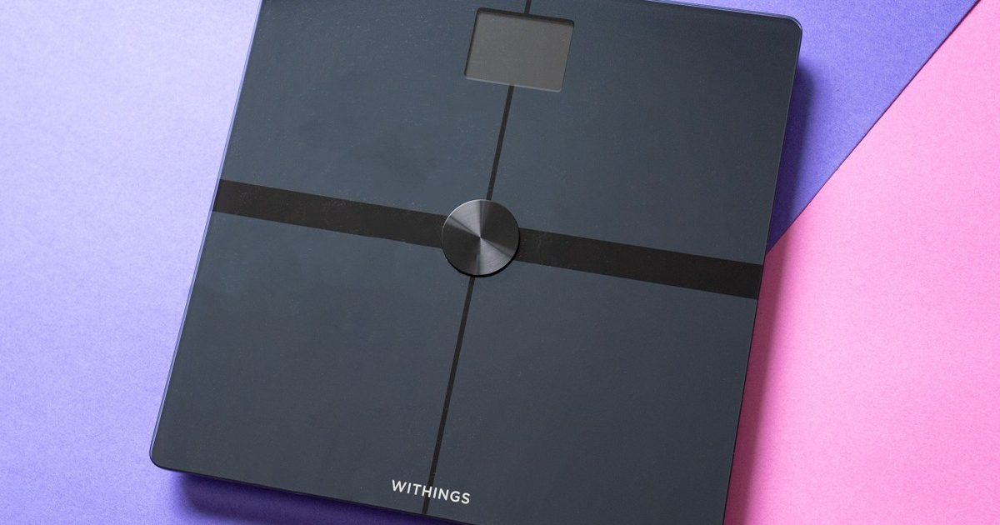

Этот проект с открытым исходным кодом позволяет синхронизировать данные Withings с другими приложениями без подписки
Когда в начале этого месяца выяснилось, что Withings потребует от новых пользователей подписки Withings Plus для синхронизации данных Heath с устройств компании на сторонние приложения, Том Энтони, которому уже надоело мобильное приложение Withings, которое они описывают как «раздутый беспорядок», стал мотивированным, чтобы «освободить» их ...